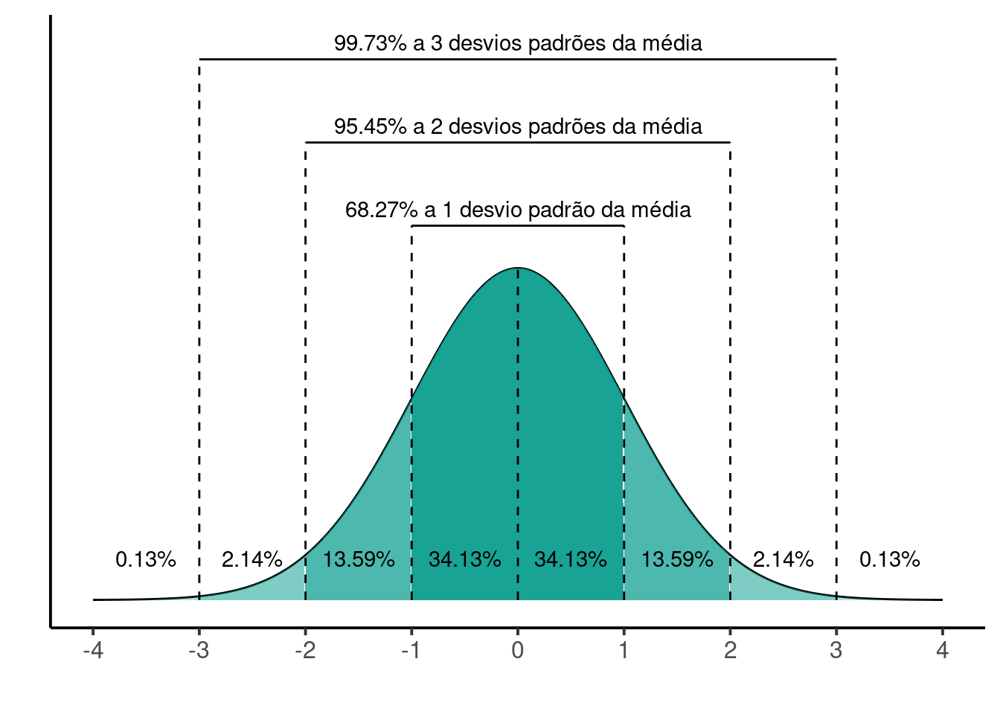
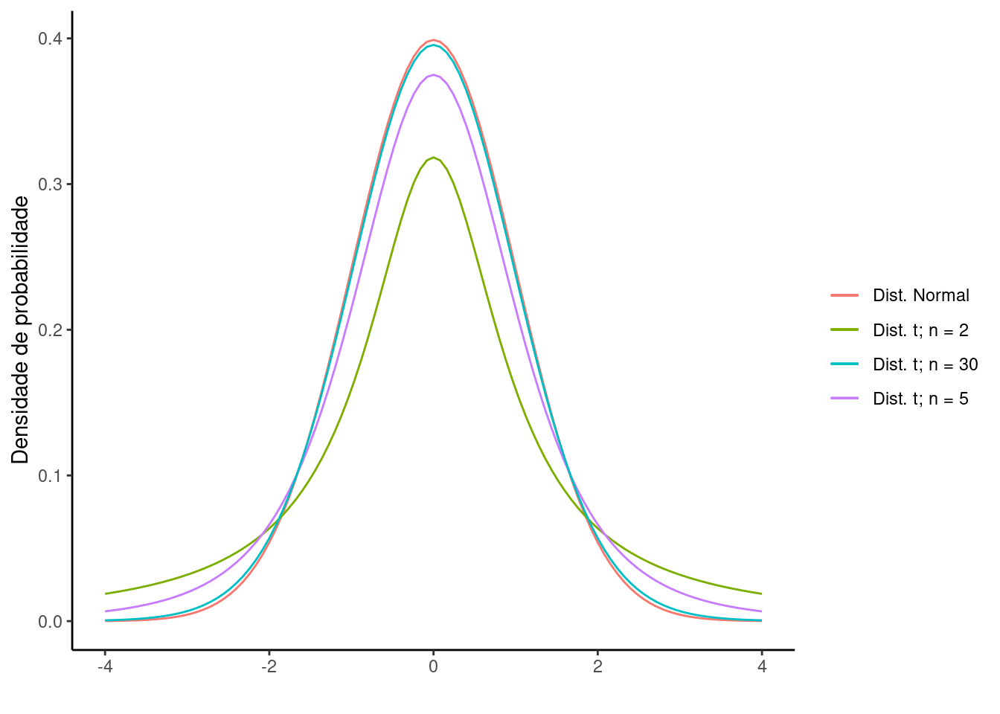
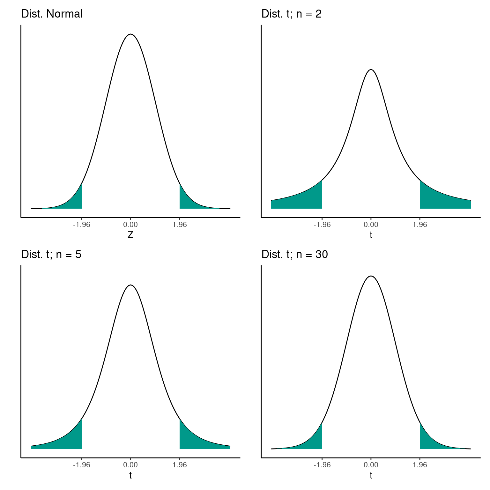
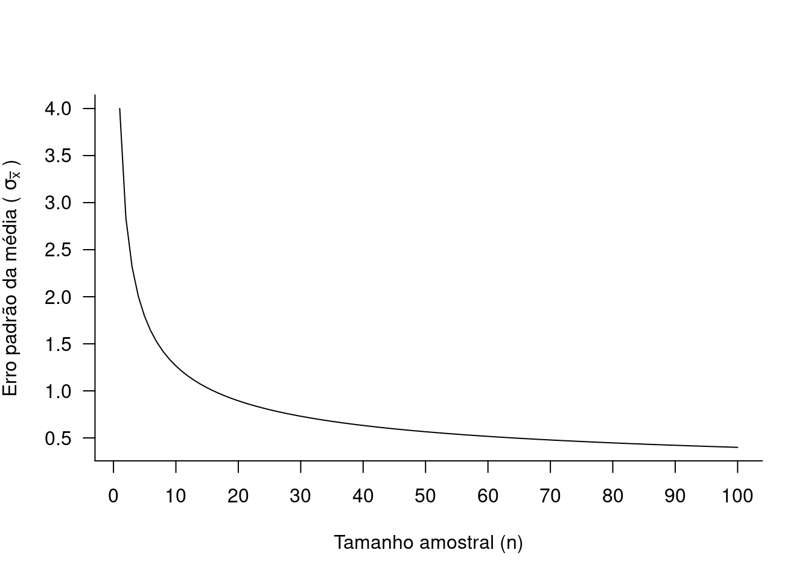
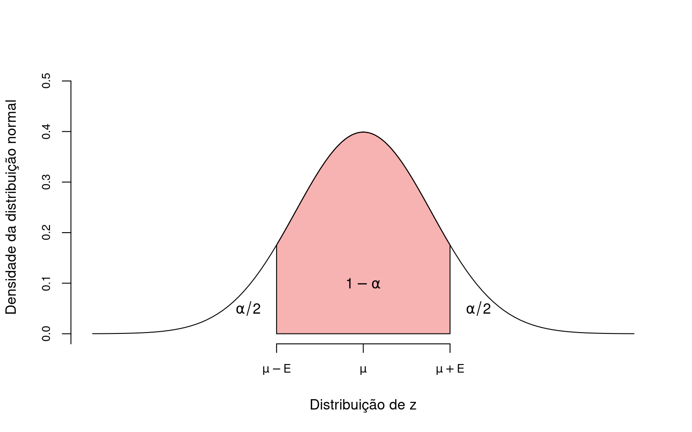

library(tidyverse)
library(patchwork)5 Estimando a média populacional
Pacotes, funções e base de dados utilizadas no capítulo
Pacotes:
Funções: normal_empirica_gg.r
source('scripts/normal_empirica_gg.r')5.1 Estimação pontual e estimação intervalar
A média \(\overline{X}\) obtida a partir de uma determinada amostra varia em função das características das unidades amostrais que foram selecionadas (Capítulo 2). Portanto, \(\overline{X}\) não será igual à média \(\mu\). No entanto, o TLC (Capítulo 4) nos garante que a distribuição esperada das médias amostrais terá uma distribuição normal e que a média das médias (\(\mu_{\overline{X}}\)) será igual a \(\mu\). Vimos ainda que o desvio padrão da distribuição das médias amostrais (conhecido como erro padrão - \(\sigma_{\overline{X}}\)) dependerá do tamanho da amostra \(n\), de acordo com a expressão:
\[\sigma_{\overline{X}} = \frac{\sigma}{\sqrt{n}}\]
Uma vez que não conhecemos \(\mu\), temos que estimá-lo a partir da amostra. Neste caso, \(\overline{X}\) será nossa melhor estimativa da média populacional. Dizemos que \(\overline{X}\) é o estimador pontual de \(\mu\).
Como \(\overline{X}\) varia em função de nossa amostra particular, devemos obter além da estimativa pontual, uma estimativa intervalar que nos é fornecida pelo intervalo de confiança.
5.1.1 Intervalo de confiança
Intervalo de confiança: definição
É o intervalo de valores associado a um determinado nível de significância (\(\alpha\)). Quando dizemos que um intervalo foi calculado a um nível de confiança de \(95\%\) (\(1 - \alpha\)), estamos dizendo que a probabilidade do IC conter o valor da média populacional \(\mu\) é de \(95\%\).
O IC é calculado por:
\[IC_{1-\alpha} = \mu \pm z_{\alpha/2} \times \frac{\sigma}{\sqrt{n}}\]
O valor de \(z_{\alpha/2}\) é o valor do índice \(z\) associado ao nível de confiança desejado.
Se desejamos definir o intervalo de confiança a 95% precisamos garantir que haja uma probabilidade de 95% de que a média amostral esteja ao redor da média populacional. Deste modo, o limite deve excluir 2.5% da porção superior e 2.5% da porção inferior da curva. Para isto, definimos \(z_{\alpha/2} = 1.96\), sendo \(\alpha\) fixado em 0.05.
O valor \(z_{\alpha/2} = 1.96\) foi retirado da Tabela \(Z\) como o módulo do valor de \(z\) que delimida uma área inferior igual a \(0.025\).
Se queremos um nível de confiança diferente, basta ajustar o valor de \(\alpha\). Por exemplo, se queremos um nível de significância a 99%, fixamos \(\alpha\) em \(0.01\) e portanto \(z = 2.58\). Da mesma forma, o \(IC_{90\%}\) poderá ser obtido com \(\alpha = 0.10\) e consequentemente \(z = 1.64\). Estes e outros limites descrevem as probabilidades em uma distribuição normal padronizada (Capítulo 3), que podem ser obtidos com o uso da maioria dos softwares estatísticos, além de estarem incluso na Tabela Z, encontrada na grande maioria dos livros de estatística básica. Os valores de \(Z\) são os mesmos discutidos no tópico Medidas de posição.
Code
# Ver função completa no arquivo 'scripts/normal_empirica_gg.r'
normal_empirica_gg(xlabels = c(-4:4))
Uma representação esquemática do erro amostralPara o cálculo do intervalo de confiança, estamos assumindo que as médias amostrais têm Distribuição Normal com média \(\mu\) e desvio padrão \(\frac{\sigma}{\sqrt{n}}\). Fazendo isto, estamos no Teorema Central do Limite (TCL) (Capítulo 4). Geralmente não temos os valores de \(\mu\) e \(\sigma\), de modo que utilizamos os valores de \(\overline{X}\) e \(s\) calculados a partir de nossa amostra. Quando as amostras são grandes (\(n\ge{30}\)) não há problema em utilizar o valor de \(z_{\alpha/2}\), e assim:
\[IC_{1-\alpha} = \overline{X} \pm z_{\alpha/2} \times \frac{s}{\sqrt{n}}\]
5.1.1.1 Distribuiçao \(t\) de Student: \(\mu\) e \(\sigma\) desconhecidos
Quando não conhecemos \(\mu\) e \(\sigma\) e as amostras são pequenas (ex. \(n<30\)), a dsitribuição normal não é a melhor aproximação para o comportamento das médias amostrais. Nestes casos, substituímos a distribuição de \(z\) pela Distribuição \(t\) de Student, sendo o intervalo de confiança obtido por:
\[IC_{1-\alpha} = \overline{X} \pm t_{\alpha/2, gl} \times \frac{s}{\sqrt{n}}\]
Em que \(\alpha\) continua sendo o nível de significância e \(gl\) é definido como os graus de liberdade. Neste caso, os graus de liberdade são dados por:
\[gl = n-1\]
O formato da distribuição \(t\) de student não é constante. À medida que o tamanho amostral aumenta, o formado da distribuição \(t\) converge para a distribuição normal. Isto faz com que na prática raremente se utiliza a distribuição \(Z\), substituindo-a pela distribuição \(t\) de Student.

Para amostras pequenas (\(n = 2\)) o formato da distribuição de \(t\) é distinto da distribuição normal. No entanto, para tamanhos amostrais maiores (\(n = 30\)) as o formato da distribuição \(t\) tende a a convergir para o mesmo formato a distribuição normal. Esta característica implica que a área a partir de um determinado limite \(t_i\) não é constante como na distribuição normal, mas depende do tamanho da amostra, como pode ser visto abaixo.

5.2 Introdução à suficiência amostral
Uma decisão central ao planejamento de um experimento é quanto recurso (ex. tempo, dinheiro, mão de obra) devem ser investidos para se obter boas estimativas dos parâmetros populacionais. Por boas estimativas, entendemos amostras precisas, ou seja, que podem ser definida por amostras com baixo erro padrão e acuradas, que em média apontem para o verdadeiro valor do parâmetro. Neste caso, uma das primeiras questões a ser feita é “Qual tamanho amostral aplicar em meu estudo?”.
Vimos que aumentar o tamanho amostral resulta em estimativas mais precisas, isto é com menor erro padrão. Portanto, um bom delineamento amostral é aquele que permita, a um custo mínimo, obter estimativas com a precisão desejada. Uma pesquisa que resulte em estimativas demasiadamente imprecisas pode se mostrar inútil. O que dizer por exemplo, se um estudo conclui que o comprimento médios de uma espécie de pescado é de \(35\) cm com uma incerteza a \(95\%\) entre \(15\) e \(55\) cm? Uma estimativa com tal nível de imprecisão não terá qualquer implicação prática.
Por outro lado, partir de um determinado tamanho amostral o ganho em precisão torna-se mínimo. Isto significa que amostras demasiadamente grandes podem ter um custo muto alto porém não serem capazes aumentar de forma relevante a precisão do experimento.
Veja o que ocorre com o erro padrão de uma amostra à medida que aumenta o tamanho \(n\).

Neste exemplo, para amostras de tamanho 1, \(\sigma_{\overline{X}} = 4\). Se tivermos agora amostras de tamanho 10, \(\sigma_{\overline{X}} = 1.2\), uma redução de mais de 50%. No entanto aumentarmos o tamanho amostral para 50 o erro padrão cai somente de \(1,2\) para \(0,56\). Isto significa que a partir de determinado ponto (neste exemplo a partir de \(10\) ou \(20\) amostras), a redução no erro padrão torna-se mínima. Neste momento podemos podemos refletir sobre o custo de continuar aumentando o tamanho amostral para obter um ganho cada vez menor em precisão.
Para encontrarmos o tamanho amostral desejado, devemos decidir sobre dois pontos: i - que nível de acurácia desejado, ou seja, quão distante do valor real (média populacional) queremos que nossa esimativa esteja; e ii - qual o nível de confiança do resultado, ou seja, com que precisão queremos fazer esta estimativa.
5.2.1 Nível de acurácia desejado (margem de erro) e nível de confiança na estimativa
O nível de acurácia desejado é comumente conhecido com margem de Erro (E), definida como diferença máxima provável (com probabilidade \(1-\alpha\)) entre a média amostral e a média populacional.
A margem de erro para a média amostral pode ser obtida por (compare esta expressão com a do intervalo de confiança):
\[E = z_{\alpha/2} \times \frac{\sigma}{\sqrt{n}}\]
O nível de confiança na estimativa nos garante que nossa estimativa estará dentro da margem de erro assumida com probabilidade \(1-\alpha\). Como vimos acima, valores típicos para o nível de confiança são \(99\%\), \(95\%\) e \(90\%\).
Uma representação esquemática do erro amostral e do nível de confiança na distribuição de \(z\) pode ser vista abaixo:

A definição da margem de erro e do nível de confiança depende de estimativas prévias dos parâmetros populacionais \(\mu\) e \(\sigma\). Estas estimativas podem ser obtidas na literatura, buscando estudos similares, ou por meio de um projeto piloto. Em um experimento piloto, o pesquisador irá conduzir seu plano de amostragem com um tamanho mínimo, justamente para avaliar a eficiência metodológica, adequabilidade dos resultados e prever o esforço amostral adequado. As informações de um pequeno estudo piloto, se bem aproveitadas, podem evitar erros simples de delineamento, além de invariavelmente, permitir economia de recusros e consequentemente ganho em qualidade.
5.2.2 Determinando o tamanho de uma amostra
Podemos voltar a nossa questão anterior sobre Qual tamanho amostral aplicar em meu estudo?. Esta questão pode ser reformulada como:
Qual tamanho amostral aplicar para obter uma estimativa de \(\mu\) que possua uma margem de erro \(E\) e nivel de confiança \(1-\alpha\) pré-determinados.
Iniciando com a fórmula da margem de erro:
\[E = z_{\alpha/2} \times \frac{\sigma}{\sqrt{n}}\]
isolamos a variável \(n\) para obter:
\[n = (\frac{ z_{\alpha/2} \times \sigma}{E})^2\]
Novamente, uma vez que não conhecemos o desvio padrão populacional \(\sigma\) podemos substituí-lo pelo desvio padrão (\(s\)) de um experimento piloto ou estimá-lo a partir da literatura.
Vídeo-aulas